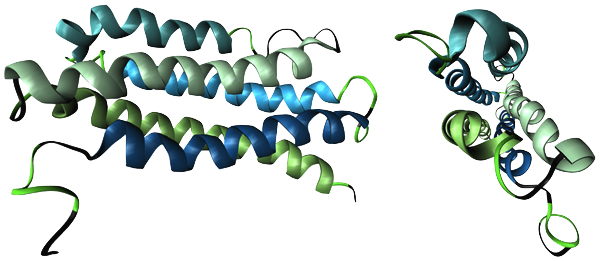

ปริศนาการพับตัวของโปรตีน
ปัญหาที่นักวิทยาศาสตร์ยังหาทางออกไม่ได้ แต่เราช่วยนักวิทยาศาสตร์หาทางออกได้
ทำไมรูปร่างของโปรตีนถึงมีความสำคัญ?
โปรตีนที่ก่อตัวอยู่ในเซลล์จะพับในรูปแบบเฉพาะตัว และบางครั้งมันก็จะมาต่อกันอย่างพอดี แต่ถ้ารูปร่างของโปรตีนนั้นพับผิดมาแต่กำเนิด มันก็จะมาต่อกันไม่ได้และมันก็จะไม่ทำงาน จุดนี้อาจก่อนให้เกิดโรคขึ้นมาได้ ในปัจจุบัญก็ยังไม่มีใครรู้แน่ชัดเกี่ยวกับมาพับตัว และการต่อกันของโปรตีน และวิทยาการในปัจจุบันก็ยังไม่สามารถแก้ไขการพับตัวแบบผิดๆ ของโปรตีนนี้ได้
อะไรจะเกิดขึ้นเมื่อการพับตัวของโปรตีนผิดปกติ?
โปรตีนที่ที่เป็นประโยชน์หรือพับตัวผิดนั้น ก็ไม่มีประโยชน์ต่อเซลล์นั้นๆ แล้วก็จะก่อตัวอยู่ การที่โปรตีนพับผิดปกตินั้นก็เหมือนกับเมื่อเราต้มไข่ขาวนั้นเอง ปกติแล้วไข่ขาวจะประกอบด้วยน้ำและโปรตีน ก่อนเราต้มมันจะเหลว ใส และลื่น แต่เมื่อเราต้มไข่ขาวนั้นแล้ว ไข่ขาวจะมีรูปร่างขึ้นมาและมีสถานะเป็นของแข็งและไม่ใส การเปลี่ยนแปลงของไข่ขาวนี้ก็เหมือนกับการที่โปรตีนพับตัวผิดปกตินั่นเอง

โรคอะไรบ้างที่เกิดจากการพับอย่างผิดปกติของโปรตีน?
โรคที่นักวิทยาศาสตร์เชื่อว่าเกิดจากการพับอย่างผิดปกติของโปรตีนมีอยู่หลายโรคด้วยกัน ยกตัวอย่างเช่น โรคอัลไซเมอร์ (Alzheimer's), ALS; Amyotrophic Lateral Scherosis หรือโรคกล้ามเนื้ออ่อนแรง, โรคพาร์กินสัน (Parkison's disease) ที่เป็นโรคเกี่ยวกับระบบประสาท, โรควัวบ้า (Mad Cow) ที่เป็นโรคเกี่ยวกับระบบสมอง และโรคมะเร็ง
เรามาอธิบายเกี่ยวกับ ALS กัน - โรคกล้ามเนื้ออ่อนแรงนี้เกิดจากการที่โปรตีนในประสาทของคนเราพับอย่างผิดปกติ แล้วก็กองกันอยู่เป็นของเสียและมีขนาดใหญ่ขึ้นเรื่อยๆ และขนาดของก้อนโปรตีนผิดปกตินี้ก็จะใหญ่ขึ้นไปเรื่อยๆ ภายในเซลล์ประสาททำให้กล้ามเนื้อไม่สามารถรับสัญญาณการส่ังการให้ขยับจากสมองได้ และเมื่อเวลาผ่านไป เซลล์ประสาทที่ไม่ได้รับการส่ังการนานๆ ก็จะฝ่อและตายไปในที่สุด ทำให้คนที่เป็นโรคกล้ามเนื้ออ่อนแรงนี้ ก็จะขยับตัวไม่ได้ในที่สุด
โครงการ Folding@home
ด้วยปัญหาการพับตัวอย่างผิดปกติของโปรตีนนี้ทำให้มีการศึกษาโปรตีนกันขึ้น จนทำให้เกิดโครงการ Folding@home ซึ่งการที่จะเข้าใจการพับของโปรตีนที่ซับซ้อนมากเกิดกว่าสมองของมนุษย์จะสามารถคิดออกได้ ก็ต้องใช้คอมพิวเตอร์ที่มีประสิทธิภาพสูงมากๆ เข้ามาช่วย โครงการ Folding@home จึงเลือกใช้เทคนิก Grid Computing ซึ่งเป็นการรวมพลังคอมพิวเตอร์ทั่วโลกช่วยกันคำนวนการพับของโปรตีนแล้วส่งข้อมูลให้กับโครงข่ายหลัก เพื่อที่นักวิทยาศาสตร์จะได้เข้าใจการพับตัวของโปรตีนที่ซับซ้อนนี้ได้มากขึ้น
การเข้าร่วมโครงการ Folding@home เพียงแค่ติดตั้งโปรแกรมเล็กๆ ลงไปในคอมพิวเตอร์ แล้วโปรแกรมนี้จะทำงานช่วยโลกตอนที่คอมกำลังว่างอยู่ (ตอนนี้เปิดคอมทิ้งไว้เฉยๆ) และเมื่อเรากลับมาใช้คอมอีกครั้ง โปรแกรมนี้ก็จะหยุดทำงานไปเอง เพื่อให้เราใช้งานคอมดังเดิม Folding@home จึงเป็นทางเลือกที่ดีสำหรับคนที่ชอบเปิดคอมพิวเตอร์ทิ้งไว้เฉยๆ
ที่มา: http://folding.stanford.edu/ และ หนังสือ Prentice Hall; Science Explorer เรื่อง Cells and Heredity.
เรียบเรียง: marchputt at zodsai.com |